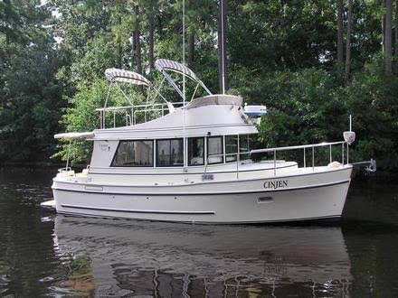

Camano 28/31 Troll
1990–2011
The Camano 28/31 Troll is a compact British Columbia-designed flybridge cruiser built around Bob Warman’s distinctive Keelform semi-displacement hull. The hull measures 28 feet on deck and roughly 31 feet overall, which explains the model’s changing 28, 30 and 31 marketing designations. A single diesel sits low in the keel and drives a protected shaft, while lower and upper helms, a bright deckhouse and one-cabin interior make the boat primarily a couple-oriented inland and coastal cruiser.

- Length
- 31 ft
- Beam
- 10.5 ft
- Draft
- 3.25 ft
- Hull behaviour
- Semi-Displacement
- Fuel
- Diesel
- Propulsion
- Shaft
- Engine configuration
- Single inboard diesel
- Boat family
- Trawler
- Construction
- Solid fiberglass bottom with cored hull sides and cored deck; verify year-specific repairs and modifications
Best for
- Couples seeking an economical flybridge pocket trawler
- Great Loop, inland-waterway and protected coastal cruising
- Owner-operators valuing visibility, simple single-diesel propulsion and manageable dimensions
Trade-offs
- Small cockpit and modest storage compared with wider cruisers
- Steep flybridge ladder and upper-station exposure affect accessibility
- One private cabin limits guest privacy
- Production changes in engines and tankage require hull-number-specific verification
Known concerns
- No model-specific concern has been promoted to B-Atlas’s evidence threshold. This does not mean the model has no age-, condition- or hull-specific risks.
Inspection focus
- Confirm hull number, marketed model designation and actual Troll/Gnome configuration
- Moisture-test windows, deck fittings, cabin-top and flybridge penetrations where applicable
- Inspect cored hull-side/deck areas around penetrations and previous repairs
- Inspect aluminum fuel tanks, plastic water tanks, fill/vent hoses and shutoff/return valves
- Inspect raw-water cooling, exhaust, shaft, cutlass bearing, rudder and hydraulic steering
- Check bonding, sacrificial anodes and shaft-zinc clearance near the keel exit
Continue researching
Related boat models
31 ft · Semi-Displacement
41 ft · Semi-Displacement
31 ft · Planing
31 ft · Semi-Displacement
31 ft · Semi-Displacement
31 ft · Semi-Displacement
About this record
B-Atlas preserves uncertainty: missing information remains unknown rather than being treated as a negative. Specifications and guidance describe the model record; individual boats can differ by year, equipment, refit and condition.